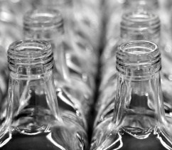
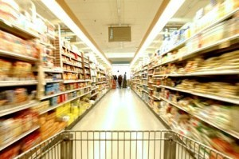

Pasos para el reciclaje
El Reciclaje incluye la recopilación de materiales reciclabes que, de otra forma, serían considerados como simples desechos. Clasificar y procesar las materias reciclables para reconvertirlas en materias primas como sucede en el caso de las fibras, fabricar nuevos productos a partir de los ya reciclados y la compra de los mismos. La recopilación y proceso de materiales secundarios, así como la fabricación de productos reciclados y la compra de dichos productos, crea un círculo o ciclo que a su vez, garantiza el éxito total y el valor que tiene en sí el Reciclaje.
La recogida y el proceso

Recoger desechos reciclables varía de una comunidad a otra, pero podemos encontrar cuatro procesos principales: En la acera, en centros específicos de recogida, centros donde se recompensa de alguna manera por reciclar y otros programas de depósito y/o recogida de productos desechables.
Independientemente del método utilizado en el proceso de Reciclaje, la próxima etapa del recorrido es la misma. Todo el material reciclabe es llevado al depósito de reciclaje de turno, para su posterior clasificación y transformación en materiales y nuevos bienes de consumo. Los productos finales ya reciclados, son comprados y vendidos como cualquier otro producto nuevo, y los precios de dichos productos fluctúan y/o cambian según el Mercado.
La fabricacion

Una vez limpios y separados, los productos reciclados son sometidos a un segundo paso de reciclaje. Hoy en día, es muy frecuente encontrar cada vez más, productos reciclados sólo parcialmente o en su totalidad. Productos comunes del hogar reciclados son periódicos, toallas de papel, latas de aluminio, envases de plástico y vidrio, el acero y/o botellas de detergente entre otros muchos artículos. Los materiales reciclados también se utilizan para otras aplicaciones innovadoras para mobiliario urbano; ej. en el asfalto para carreteras, en los bancos del parque o puentes peatonales, etc.
La compra de productos reciclados
 La Compra de Productos Reciclados completa el ciclo del Reciclaje. Al adquirir ¨productos reciclados¨, Gobiernos, empresas, así como, los consumidores individuales son clave. Cada uno de ellos juega e interpreta un papel primordial muy importante para el éxito continuado del proceso de Reciclaje. Como hoy en día el consumidor exige productos que sean respetuosos con el medio ambiente, los fabricantes de productos se esfuerzan por seguir ofreciendo productos de gran calidad pero, reciclados, para satisfacer la gran demanda en el Mercado. Obtenga más información sobre el reciclaje, su terminología y algunos consejos para poder acceder e identificar productos reciclados con total seguridad.